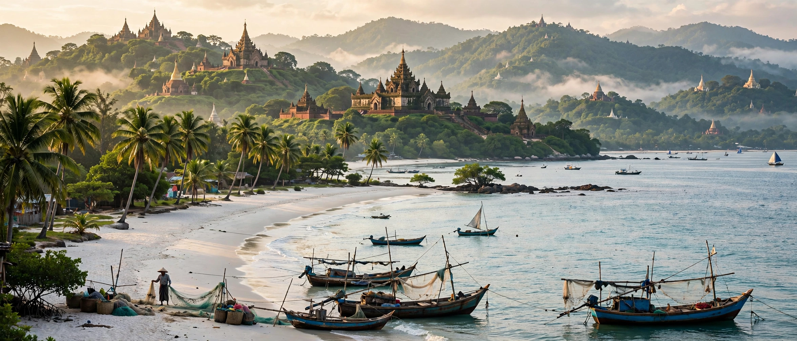

Rakhine State (Burmese: ရခိုင်ပြည်နယ်), formerly Arakan, is a state in western Myanmar on the Bay of Bengal coast, bordering Bangladesh to the northwest. Its capital is Sittwe. The state, area about 36,778 km², is home to Rakhine Buddhists, Rohingya Muslims and other groups.

Independent Arakanese kingdoms, notably Mrauk U (1430–1785), traded across the Bay of Bengal before Burmese conquest in 1785 and British annexation after the First Anglo-Burmese War (1826). Arakan became part of independent Burma in 1948.
Communal violence in 2012 and military operations in 2016–17 drove over 740,000 Rohingya to Bangladesh, prompting international genocide proceedings against Myanmar at the ICJ. The Arakan Army insurgency has since seized much of the state amid Myanmar's civil war (2023–25).
Separated from central Myanmar by the Arakan Mountains, the state depends on rice, fishing, and offshore gas; Ngapali is a noted beach resort.